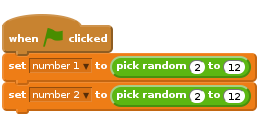
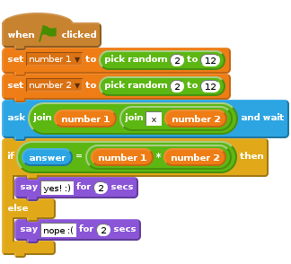
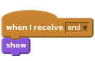
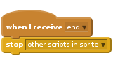
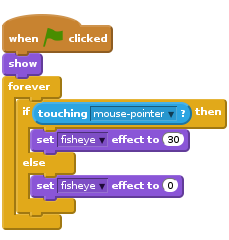
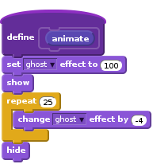
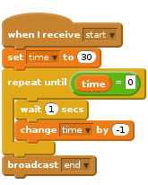
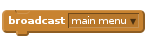

Heads Up!
This project is new. That means we’re still testing it, and there’s a small chance there could be some bugs or typos. If you’re a club leader trying out this project, please complete this short questionnaire (or email ) to let us know how it went!
Introduction
In this project you’ll learn how to create a times table quiz, in which you have to get as many answers correct as you can in 30 seconds.

Step 1: Creating questions
Let’s start by creating random questions for the player to answer.
Activity Checklist
Start a new Scratch project, and delete the cat sprite so that your project is empty. You can find the online Scratch editor at jumpto.cc/scratch-new.
Choose a character and a backdrop for your game. You can choose any you like! Here’s an example:

Create 2 new variables called
number 1andnumber 2. These variables will store the 2 numbers that will be multiplied together.
Add code to your character, to set both of these variables to a
randomnumber between 2 and 12.
You can then ask the player for the answer, and let them know if they were right or wrong.

Test your project fully, by answering one question correctly and one with the wrong answer.
Add a
foreverloop around this code, so that the player is asked lots of questions.Create a countdown timer on the stage, using a variable called
time. The ‘Balloons’ project has instructions for making a timer (in step 6) if you need help!Test your project again - you should be able to continue asking questions until the time runs out.
Save your project
Challenge: Changing costumes
Can you change your character’s costumes, so that they respond to the player’s answer?

Challenge: Adding a score
Can you add a score to your game? You can add a point for every correct answer. If you’re feeling mean, you could even reset the player’s score to 0 if they get a question wrong!
Save your project
Step 2: Multiple games
Let’s add a ‘play’ button to your game, so that you can play lots of times.
Activity Checklist
Create a new ‘Play’ button sprite, which your player will click to start a new game. You can draw it yourself, or edit a sprite from the Scratch library.

Add this code to your new button.
![when flag clicked
show
when this sprite clicked
hide
broadcast [start v]](574099d3701a2e9cdda818d09bf8a35484612d9e.png)
This code shows the play button when your project is started. When the button is clicked, it is hidden and then broadcasts a message that will start the game.
You’ll need to edit your character’s code, so that the game starts when they receive the
startmessage, and not when the flag is clicked.Replace the
when flag clickedcode withwhen I receive start.
Click the green flag and then click your new play button to test it. You should see that the game doesn’t start until the button is clicked.
Did you notice that the timer starts when the green flag is clicked, and not when the game starts?

Can you fix this problem?
Click on the stage, and replace the
stop allblock with anendmessage.
You can now add code to your button, to show it again at the end of each game.

You’ll also need to stop your character asking questions at the end of each game:

Test your play button by playing a couple of games. You should notice that the play button shows after each game. To make testing easier, you can shorten each game, so that it only lasts a few seconds.
You can even change how the button looks when the mouse hovers over it.


Save your project
Challenge: Start screen
Can you add another backdrop to your stage, which will become your game’s start screen? You can use the when I receive start and when I receive end blocks to switch between backdrops.
You can also show and hide your character, and even show and hide your timer by using these blocks:
![show variable [time v]](16fa4926a67764bf768cc80865f3fc3d83ecfd4c.png)
![hide variable [time v]](fa7ebb28c10f73c4df20dd9b748f8ca5b58c79af.png)

Save your project
Step 3: Adding graphics
Instead of your character just saying yes! :) or nope :( to the player, let’s add some graphics that will let the player know how they are doing.
Create a new sprite called ‘Result’, containing both a ‘tick’ and a ‘cross’ costume.

Change your character’s code, so that instead of telling the player how they did, it broadcasts
correctandwrongmessages instead.
You can now use these messages to show the ‘tick’ or ‘cross’ costume. Add this code to your new ‘Result’ sprite:

Test out your game again. You should see a tick whenever you get a question correct, and a cross whenever you get one wrong!

Have you noticed that the code for
when I receive correctandwhen I receive wrongis nearly identical? Let’s create a function to make it easier for you to make changes to your code.On your ‘Result’ sprite, click
More Blocks, and then ‘Make a Block’. Create a new function calledanimate.
You can then add the animation code into your new animation function, and then just use the function twice:

Now, if you want to show the tick and the cross for a longer or shorter time, you only need to make one change to your code. Try it!
Instead of just showing and hiding the tick and the cross, you could change your animation function, so that the graphics fade in.

Save your project
Challenge: Improved animation
Can you improve the animation of your graphics? You could code the tick and cross so that they fade out as well as fade in. Or, you could use other cool effects:

Save your project
Challenge: Sound and music
Can you add sound effects and music to your game? For example:
- Playing a sound when the player gets an answer right or wrong;
- Adding a ticking sound to your countdown timer;
Playing a sound when the time is up;
You could also constantly play music on a loop (if you’re not sure how to do this, step 4 of the ‘Rock Band’ project will help you).
Save your project
Challenge: Race to 10 points
Can you change your game, so that instead of answering as many questions as they can in 30 seconds, the player has to see how quickly they can get 10 questions correct?
To do this, you’ll only need to change your timer code. Can you see what needs to be changed?

Save your project
Challenge: Instruction screen
Can you add an instructions screen to your game, telling your player how to play the game? You’ll need an ‘Instructions’ button, and another stage background.

You may also need a ‘Back’ button to take you to the main menu.
